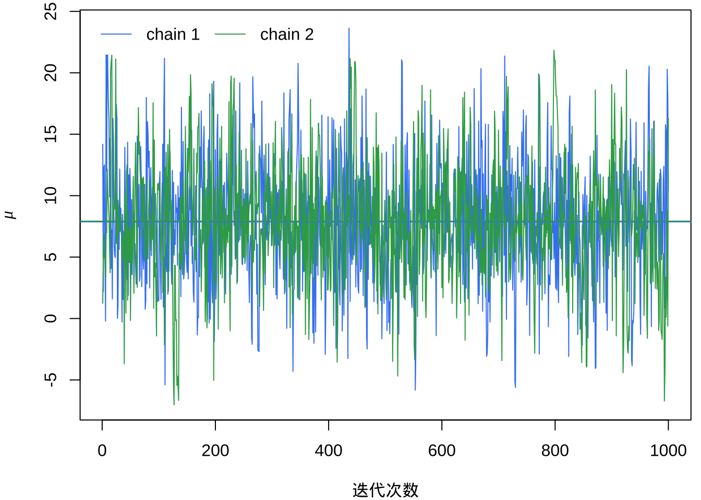
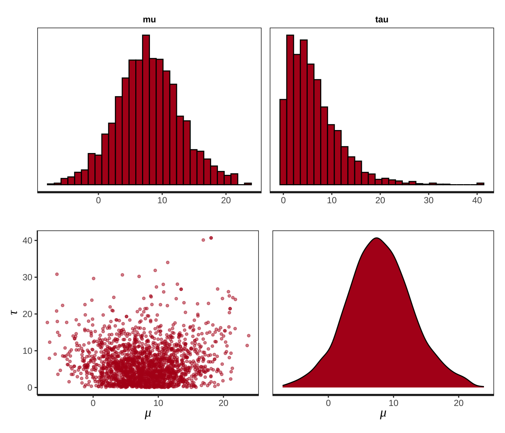
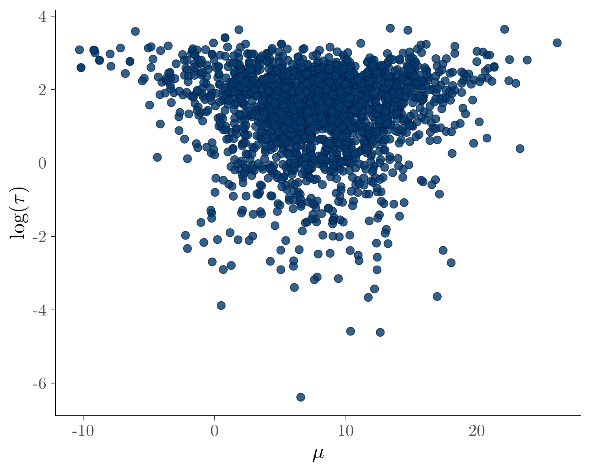
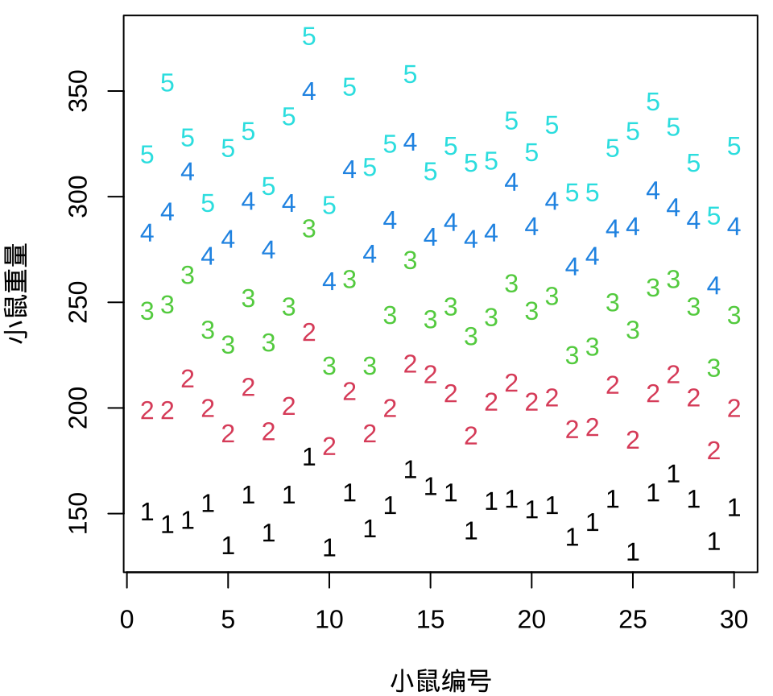
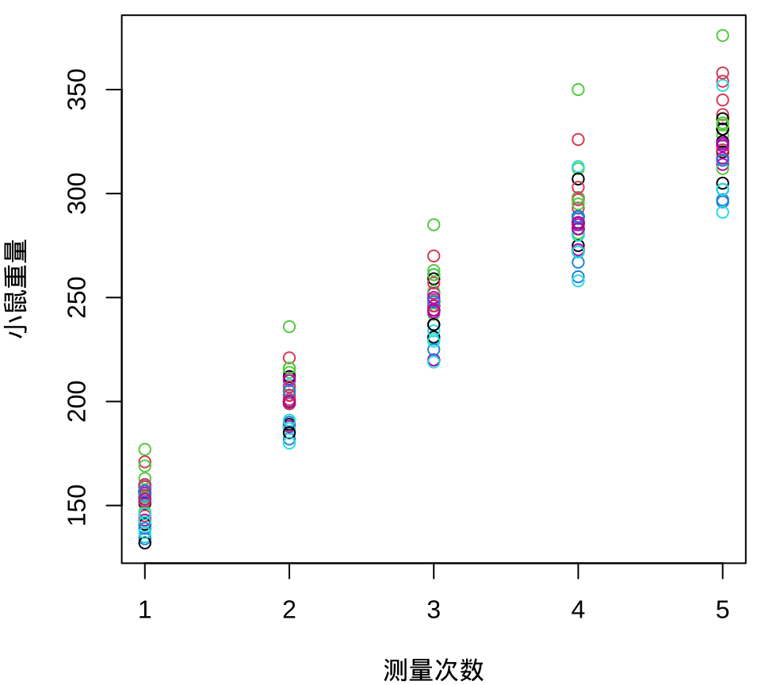
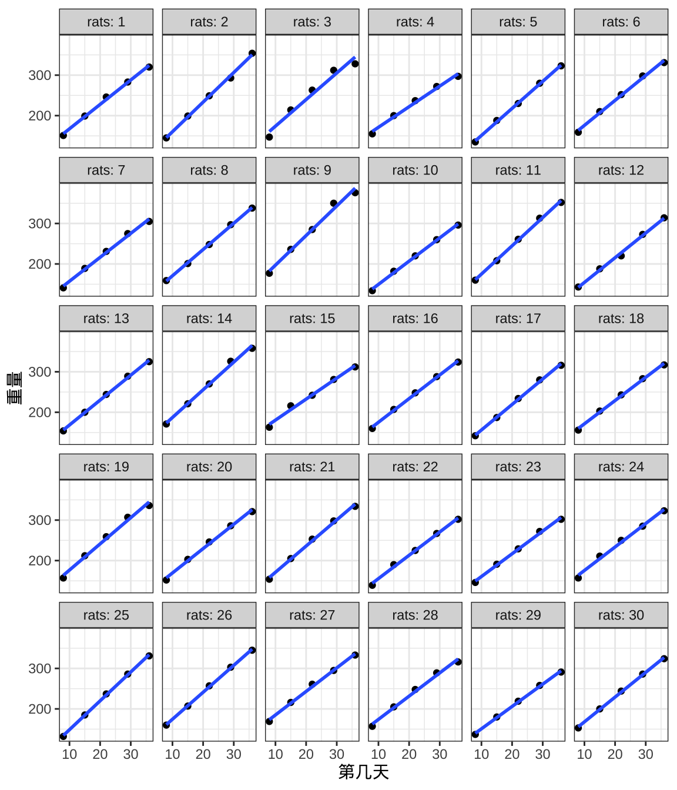
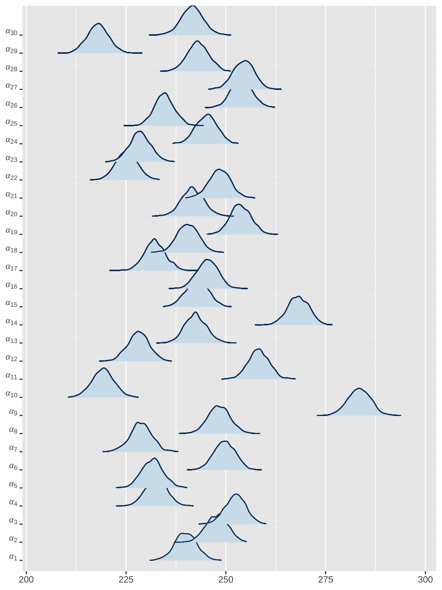
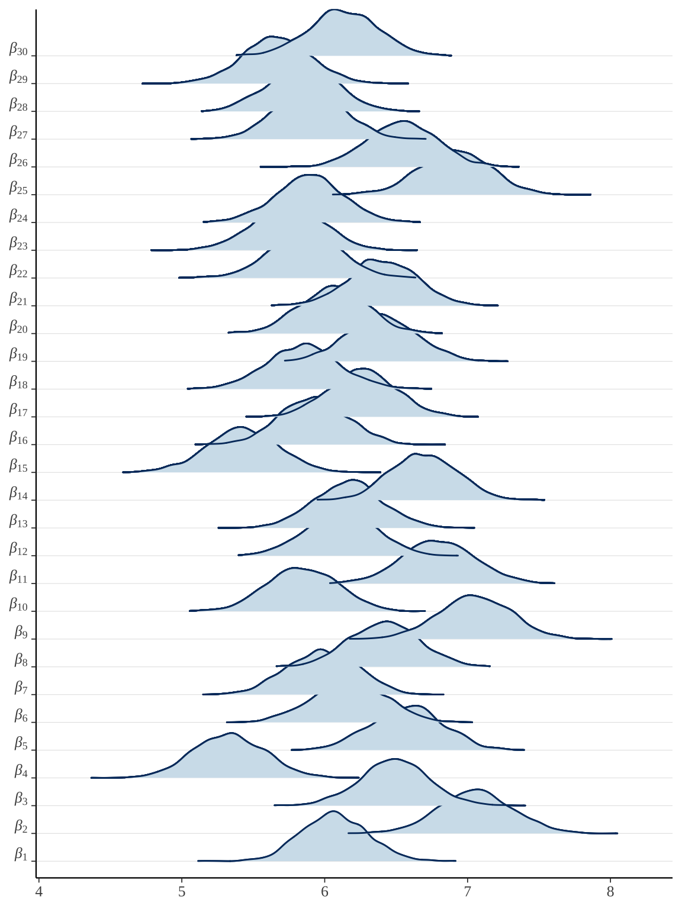

library(StanHeaders)
library(ggplot2)
library(rstan)
# 将编译的 Stan 模型与代码文件放在一起
rstan_options(auto_write = TRUE)
# 如果CPU和内存足够，设置成与马尔科夫链一样多
options(mc.cores = 2)
# 调色板
custom_colors <- c(
"#4285f4", # GoogleBlue
"#34A853", # GoogleGreen
"#FBBC05", # GoogleYellow
"#EA4335" # GoogleRed
)
rstan_ggtheme_options(
panel.background = element_rect(fill = "white"),
legend.position = "top"
)
rstan_gg_options(
fill = "#4285f4", color = "white",
pt_color = "#EA4335", chain_colors = custom_colors
)
library(bayesplot)35 分层正态模型
This is a bit like asking how should I tweak my sailboat so I can explore the ocean floor.
— Roger Koenker 1
乔治·博克斯说，所有的模型都是错的，但有些是有用的。在真实的数据面前，尽我们所能，结果发现没有最好的模型，只有更好的模型。总是需要自己去构造符合自己需求的模型及其实现，只有自己能够实现，才能在模型的海洋中畅快地遨游。
介绍分层正态模型的定义、结构、估计，分层正态模型与曲线生长模型的关系，分层正态模型与潜变量模型的关系，分层正态模型与线性混合效应的关系。以 rstan 包和 nlme 包拟合分层正态模型，说明 rstan 包的一些用法，比较贝叶斯和频率派方法拟合的结果，给出结果的解释。再对比 16 个不同的 R包实现，总结一般地使用经验，也体会不同 R 包的独特性。
35.1 rstan 包
本节以 8schools 数据为例介绍分层正态模型及 rstan 包实现，8schools 数据最早来自 Rubin (1981) ，分层正态模型如下：
\[ \begin{aligned} y_j &\sim \mathcal{N}(\theta_j,\sigma_j^2) \quad \theta_j = \mu + \tau \times \eta_j \\ \theta_j &\sim \mathcal{N}(\mu, \tau^2) \quad \eta_j \sim \mathcal{N}(0,1) \\ \mu &\sim \mathcal{N}(0, 100^2) \quad \tau \sim \mathrm{half\_normal}(0,100^2) \end{aligned} \]
其中，\(y_j,\sigma_j\) 是已知的观测数据，\(\theta_j\) 是模型参数， \(\eta_j\) 是服从标准正态分布的潜变量，\(\mu,\tau\) 是超参数，分别服从正态分布（将方差设置为很大的数，则变成弱信息先验或无信息均匀先验）和半正态分布（随机变量限制为正值）。
35.1.1 拟合模型
用 rstan 包来拟合模型，下面采用非中心的参数化表示，降低参数的相关性，减少发散的迭代次数，提高采样效率。
# 编译模型
eight_schools_fit <- stan(
model_name = "eight_schools",
# file = "code/eight_schools.stan",
model_code = "
// saved as eight_schools.stan
data {
int<lower=0> J; // number of schools
array[J] real y; // estimated treatment effects
array[J] real <lower=0> sigma; // standard error of effect estimates
}
parameters {
real mu; // population treatment effect
real<lower=0> tau; // standard deviation in treatment effects
vector[J] eta; // unscaled deviation from mu by school
}
transformed parameters {
vector[J] theta = mu + tau * eta; // school treatment effects
}
model {
target += normal_lpdf(mu | 0, 100);
target += normal_lpdf(tau | 0, 100);
target += normal_lpdf(eta | 0, 1); // prior log-density
target += normal_lpdf(y | theta, sigma); // log-likelihood
}
",
data = list( # 观测数据
J = 8,
y = c(28, 8, -3, 7, -1, 1, 18, 12),
sigma = c(15, 10, 16, 11, 9, 11, 10, 18)
),
warmup = 1000, # 每条链预处理迭代次数
iter = 2000, # 每条链总迭代次数
chains = 2, # 马尔科夫链的数目
cores = 2, # 指定 CPU 核心数，可以给每条链分配一个
verbose = FALSE, # 不显示迭代的中间过程
refresh = 0, # 不显示采样的进度
seed = 20232023 # 设置随机数种子，不要使用 set.seed() 函数
)35.1.2 模型输出
用函数 print() 打印输出结果，保留 2 位小数。
#> Inference for Stan model: eight_schools.
#> 2 chains, each with iter=2000; warmup=1000; thin=1;
#> post-warmup draws per chain=1000, total post-warmup draws=2000.
#>
#> mean se_mean sd 2.5% 25% 50% 75% 97.5% n_eff Rhat
#> mu 7.90 0.16 5.00 -1.79 4.60 7.71 11.05 18.37 988 1
#> tau 6.43 0.20 5.35 0.22 2.49 5.23 8.94 19.73 733 1
#> eta[1] 0.40 0.02 0.96 -1.57 -0.21 0.41 1.06 2.27 2252 1
#> eta[2] 0.00 0.02 0.88 -1.74 -0.59 -0.01 0.57 1.77 1977 1
#> eta[3] -0.17 0.02 0.92 -1.93 -0.78 -0.18 0.41 1.71 2307 1
#> eta[4] -0.04 0.02 0.91 -1.90 -0.64 -0.01 0.55 1.76 2053 1
#> eta[5] -0.34 0.02 0.89 -2.03 -0.97 -0.38 0.25 1.43 1769 1
#> eta[6] -0.22 0.02 0.87 -1.89 -0.81 -0.23 0.36 1.52 1959 1
#> eta[7] 0.33 0.02 0.86 -1.30 -0.26 0.31 0.90 2.00 2020 1
#> eta[8] 0.05 0.02 0.96 -1.89 -0.59 0.05 0.69 1.94 2597 1
#> theta[1] 11.29 0.20 8.11 -1.69 5.88 10.14 15.34 31.08 1728 1
#> theta[2] 7.80 0.13 6.25 -4.68 3.88 7.88 11.62 19.78 2362 1
#> theta[3] 6.30 0.17 7.57 -10.90 2.15 6.63 10.87 20.04 1902 1
#> theta[4] 7.72 0.14 6.53 -5.33 3.78 7.52 11.66 21.22 2249 1
#> theta[5] 5.10 0.14 6.48 -9.20 1.04 5.69 9.50 16.71 2030 1
#> theta[6] 6.06 0.16 6.88 -8.61 2.07 6.39 10.33 19.01 1766 1
#> theta[7] 10.41 0.14 6.42 -0.18 6.03 9.59 13.98 24.97 2057 1
#> theta[8] 8.45 0.19 8.00 -7.45 4.02 8.13 12.69 26.56 1728 1
#> lp__ -50.67 0.11 2.64 -56.69 -52.25 -50.40 -48.78 -46.34 584 1
#>
#> Samples were drawn using NUTS(diag_e) at Wed Dec 20 12:24:21 2023.
#> For each parameter, n_eff is a crude measure of effective sample size,
#> and Rhat is the potential scale reduction factor on split chains (at
#> convergence, Rhat=1).值得一提，数据有限而且规律不明确，数据隐含的信息不是很多，则先验分布的情况将会对参数估计结果产生很大影响。Stan 默认采用无信息的先验分布，当使用非常弱的信息先验时，结果就非常不同了。提取任意一个参数的结果，如查看参数 \(\tau\) 的 95% 置信区间。
#> Inference for Stan model: eight_schools.
#> 2 chains, each with iter=2000; warmup=1000; thin=1;
#> post-warmup draws per chain=1000, total post-warmup draws=2000.
#>
#> mean se_mean sd 2.5% 97.5% n_eff Rhat
#> tau 6.43 0.2 5.35 0.22 19.73 733 1
#>
#> Samples were drawn using NUTS(diag_e) at Wed Dec 20 12:24:21 2023.
#> For each parameter, n_eff is a crude measure of effective sample size,
#> and Rhat is the potential scale reduction factor on split chains (at
#> convergence, Rhat=1).从迭代抽样数据获得与 print(fit) 一样的结果。以便后续对原始采样数据做任意的进一步分析。rstan 包扩展泛型函数 summary() 以支持对 stanfit 数据对象汇总，输出各个参数分链条和合并链条的后验分布结果。
35.1.3 操作数据
抽取数据对象 eight_schools_fit 中的采样数据，合并几条马氏链的结果，返回的结果是一个列表。
返回列表中的每个元素是一个数组，标量参数对应一维数组，向量参数对应二维数组。
#> List of 5
#> $ mu : num [1:2000(1d)] 9.84 9.4 1.98 5.63 2.16 ...
#> ..- attr(*, "dimnames")=List of 1
#> .. ..$ iterations: NULL
#> $ tau : num [1:2000(1d)] 4.92 13.31 9.3 2.94 8.87 ...
#> ..- attr(*, "dimnames")=List of 1
#> .. ..$ iterations: NULL
#> $ eta : num [1:2000, 1:8] -1.21 0.292 1.365 -0.479 1.142 ...
#> ..- attr(*, "dimnames")=List of 2
#> .. ..$ iterations: NULL
#> .. ..$ : NULL
#> $ theta: num [1:2000, 1:8] 3.88 13.29 14.68 4.23 12.28 ...
#> ..- attr(*, "dimnames")=List of 2
#> .. ..$ iterations: NULL
#> .. ..$ : NULL
#> $ lp__ : num [1:2000(1d)] -49 -45.8 -48.2 -52.2 -49.8 ...
#> ..- attr(*, "dimnames")=List of 1
#> .. ..$ iterations: NULL对于列表，适合用函数 lapply() 配合算术函数计算 \(\mu,\tau\) 等参数的均值。
fun_mean <- function(x) {
if (length(dim(x)) > 1) {
apply(x, 2, mean)
} else {
mean(x)
}
}
lapply(eight_schools_sim, FUN = fun_mean)#> $mu
#> [1] 7.896911
#>
#> $tau
#> [1] 6.427487
#>
#> $eta
#> [1] 0.39815800 -0.00403665 -0.17091492 -0.03835530 -0.34447579 -0.21592391
#> [7] 0.33375651 0.04527884
#>
#> $theta
#> [1] 11.293515 7.796730 6.300619 7.722628 5.100476 6.059899 10.411386
#> [8] 8.451163
#>
#> $lp__
#> [1] -50.66637类似地，计算 \(\mu,\tau\) 等参数的分位点。
fun_quantile <- function(x, probs) {
if (length(dim(x)) > 1) {
t(apply(x, 2, quantile, probs = probs))
} else {
quantile(x, probs = probs)
}
}
lapply(eight_schools_sim, fun_quantile, probs = c(2.5, 25, 50, 75, 97.5) / 100)#> $mu
#> 2.5% 25% 50% 75% 97.5%
#> -1.787025 4.603868 7.706957 11.054801 18.370903
#>
#> $tau
#> 2.5% 25% 50% 75% 97.5%
#> 0.2221582 2.4933088 5.2289974 8.9369194 19.7296019
#>
#> $eta
#>
#> 2.5% 25% 50% 75% 97.5%
#> [1,] -1.571814 -0.2051970 0.412478990 1.0592655 2.267580
#> [2,] -1.740860 -0.5924433 -0.009587292 0.5740810 1.768344
#> [3,] -1.933032 -0.7815080 -0.181728735 0.4102823 1.709490
#> [4,] -1.896206 -0.6383988 -0.008634091 0.5491973 1.758581
#> [5,] -2.029051 -0.9674769 -0.376669547 0.2505514 1.425229
#> [6,] -1.890733 -0.8146685 -0.227713876 0.3642582 1.524509
#> [7,] -1.295196 -0.2552945 0.310815774 0.9046577 1.995717
#> [8,] -1.894366 -0.5853674 0.053723000 0.6912584 1.940257
#>
#> $theta
#>
#> 2.5% 25% 50% 75% 97.5%
#> [1,] -1.6909041 5.879186 10.136104 15.343330 31.08250
#> [2,] -4.6774314 3.880805 7.876314 11.616239 19.77814
#> [3,] -10.9015495 2.149377 6.629543 10.872316 20.03882
#> [4,] -5.3329649 3.779338 7.521149 11.663011 21.22172
#> [5,] -9.2028941 1.035711 5.692159 9.501092 16.70603
#> [6,] -8.6129198 2.068728 6.393843 10.333108 19.00727
#> [7,] -0.1804168 6.033491 9.594300 13.980905 24.96505
#> [8,] -7.4463975 4.015728 8.129632 12.694195 26.55720
#>
#> $lp__
#> 2.5% 25% 50% 75% 97.5%
#> -56.69300 -52.24867 -50.39536 -48.78482 -46.3419235.1.4 采样诊断
获取马尔科夫链迭代点列数据
eight_schools_sim 是一个三维数组，1000（次迭代）* 2 （条链）* 19（个参数）。如果 permuted = TRUE 则会合并马氏链的迭代结果，变成一个列表。
#> [1] "array"#> num [1:1000, 1:2, 1:19] 14.18 2.19 12.29 12.51 5.02 ...
#> - attr(*, "dimnames")=List of 3
#> ..$ iterations: NULL
#> ..$ chains : chr [1:2] "chain:1" "chain:2"
#> ..$ parameters: chr [1:19] "mu" "tau" "eta[1]" "eta[2]" ...提取参数 \(\mu\) 的迭代点列，绘制迭代轨迹。
eight_schools_mu_sim <- eight_schools_sim[, , "mu"]
matplot(
eight_schools_mu_sim, xlab = "迭代次数", ylab = expression(mu),
type = "l", lty = "solid", col = custom_colors
)
abline(h = apply(eight_schools_mu_sim, 2, mean), col = custom_colors)
legend(
"topleft", legend = paste("chain", 1:2), box.col = "white",
inset = 0.01, lty = "solid", horiz = TRUE, col = custom_colors
)

也可以使用 rstan 包提供的函数 traceplot() 或者 stan_trace() 绘制参数的迭代轨迹图。
35.1.5 后验分布
可以用函数 stan_hist() 或 stan_dens() 绘制后验分布图。下图分别展示参数 \(\mu\)、\(\tau\) 的直方图，以及二者的散点图，参数 \(\mu\) 的后验概率密度分布图。
p1 <- stan_hist(eight_schools_fit, pars = c("mu","tau"), bins = 30)
p2 <- stan_scat(eight_schools_fit, pars = c("mu","tau"), size = 1) +
labs(x = expression(mu), y = expression(tau))
p3 <- stan_dens(eight_schools_fit, pars = "mu") + labs(x = expression(mu))
library(patchwork)
p1 / (p2 + p3)

相比于 rstan 包，bayesplot 包可视化能力更强，支持对特定的参数做变换。bayesplot 包的函数 mcmc_pairs() 以矩阵图展示多个参数的分布，下图展示参数 \(\mu\)，\(\log(\tau)\) 后验分布图。但是，这些函数都固定了一些标题，不能修改。
35.2 其它 R 包
35.2.1 nlme
接下来，用 nlme 包拟合模型。
首先，调用 nlme 包的函数 lme() 拟合模型。
library(nlme)
fit_lme <- lme(y ~ 1, random = ~ 1 | g, weights = varFixed(~ sigma^2), method = "REML")
summary(fit_lme)#> Linear mixed-effects model fit by REML
#> Data: NULL
#> AIC BIC logLik
#> 60.21091 60.04864 -27.10546
#>
#> Random effects:
#> Formula: ~1 | g
#> (Intercept) Residual
#> StdDev: 2.917988 0.780826
#>
#> Variance function:
#> Structure: fixed weights
#> Formula: ~sigma^2
#> Fixed effects: y ~ 1
#> Value Std.Error DF t-value p-value
#> (Intercept) 7.785729 3.368082 8 2.311621 0.0496
#>
#> Standardized Within-Group Residuals:
#> Min Q1 Med Q3 Max
#> -1.06635035 -0.73588511 -0.02896764 0.50254917 1.62502386
#>
#> Number of Observations: 8
#> Number of Groups: 8随机效应的标准差 2.917988 ，随机效应部分的估计
#> (Intercept)
#> 1 1.18135690
#> 2 0.02625714
#> 3 -0.55795543
#> 4 -0.08130333
#> 5 -1.29202240
#> 6 -0.70215328
#> 7 1.25167648
#> 8 0.17414393类比 Stan 输出结果中的 \(\theta\) 向量，每个学校的成绩估计
35.2.2 lme4
接着，采用 lme4 包拟合模型，发现 lme4 包获得与 nlme 包一样的结果。
control <- lme4::lmerControl(
check.conv.singular = "ignore",
check.nobs.vs.nRE = "ignore",
check.nobs.vs.nlev = "ignore"
)
fit_lme4 <- lme4::lmer(y ~ 1 + (1 | g), weights = 1 / sigma^2, control = control, REML = TRUE)
summary(fit_lme4)#> Linear mixed model fit by REML ['lmerMod']
#> Formula: y ~ 1 + (1 | g)
#> Weights: 1/sigma^2
#> Control: control
#>
#> REML criterion at convergence: 54.2
#>
#> Scaled residuals:
#> Min 1Q Median 3Q Max
#> -1.06635 -0.73589 -0.02897 0.50255 1.62502
#>
#> Random effects:
#> Groups Name Variance Std.Dev.
#> g (Intercept) 8.5145 2.9180
#> Residual 0.6097 0.7808
#> Number of obs: 8, groups: g, 8
#>
#> Fixed effects:
#> Estimate Std. Error t value
#> (Intercept) 7.786 3.368 2.31235.2.3 blme
下面使用 blme 包 (Chung 等 2013) ，blme 包基于 lme4 包，参数估计结果完全一致。
# the mode should be at the boundary of the space.
fit_blme <- blme::blmer(
y ~ 1 + (1 | g), control = control, REML = TRUE,
cov.prior = NULL, weights = 1 / sigma^2
)
summary(fit_blme)#> Prior dev : 0
#>
#> Linear mixed model fit by REML ['blmerMod']
#> Formula: y ~ 1 + (1 | g)
#> Weights: 1/sigma^2
#> Control: control
#>
#> REML criterion at convergence: 54.2
#>
#> Scaled residuals:
#> Min 1Q Median 3Q Max
#> -1.06635 -0.73589 -0.02897 0.50255 1.62502
#>
#> Random effects:
#> Groups Name Variance Std.Dev.
#> g (Intercept) 8.5145 2.9180
#> Residual 0.6097 0.7808
#> Number of obs: 8, groups: g, 8
#>
#> Fixed effects:
#> Estimate Std. Error t value
#> (Intercept) 7.786 3.368 2.31235.2.4 MCMCglmm
MCMCglmm 包 (Hadfield 2010) 采用 MCMC 算法拟合数据。
schools <- data.frame(y = y, sigma = sigma, g = g)
schools$g <- as.factor(schools$g)
# inverse-gamma prior with scale and shape equal to 0.001
prior1 <- list(
R = list(V = diag(schools$sigma^2), fix = 1),
G = list(G1 = list(V = 1, nu = 0.002))
)
# 为可重复
set.seed(20232023)
# 拟合模型
fit_mcmc <- MCMCglmm::MCMCglmm(
y ~ 1, random = ~g, rcov = ~ idh(g):units,
data = schools, prior = prior1, verbose = FALSE
)
# 输出结果
summary(fit_mcmc)#>
#> Iterations = 3001:12991
#> Thinning interval = 10
#> Sample size = 1000
#>
#> DIC: -98.07615
#>
#> G-structure: ~g
#>
#> post.mean l-95% CI u-95% CI eff.samp
#> g 11.23 0.0004247 68.57 361.3
#>
#> R-structure: ~idh(g):units
#>
#> post.mean l-95% CI u-95% CI eff.samp
#> g1.units 225 225 225 0
#> g2.units 100 100 100 0
#> g3.units 256 256 256 0
#> g4.units 121 121 121 0
#> g5.units 81 81 81 0
#> g6.units 121 121 121 0
#> g7.units 100 100 100 0
#> g8.units 324 324 324 0
#>
#> Location effects: y ~ 1
#>
#> post.mean l-95% CI u-95% CI eff.samp pMCMC
#> (Intercept) 7.6938 -0.5149 15.3275 1023 0.062 .
#> ---
#> Signif. codes: 0 '***' 0.001 '**' 0.01 '*' 0.05 '.' 0.1 ' ' 1R-structure 表示残差方差，这是已知的参数。G-structure 表示随机截距的方差，Location effects 表示固定效应的截距。截距和 nlme 包的结果很接近。
35.2.5 cmdstanr
一般地，rstan 包使用的 stan 框架版本低于 cmdstanr 包，从 rstan 包切换到 cmdstanr 包，需要注意语法、函数的变化。rstan 和 cmdstanr 使用的 Stan 版本不同导致参数估计结果不同，结果可重复的条件非常苛刻，详见 Stan 参考手册。在都是较新的版本时，Stan 代码不需要做改动，如下：
data {
int<lower=0> J; // 学校数目
array[J] real y; // 测试效果的预测值
array[J] real <lower=0> sigma; // 测试效果的标准差
}
parameters {
real mu;
real<lower=0> tau;
vector[J] eta;
}
transformed parameters {
vector[J] theta;
theta = mu + tau * eta;
}
model {
target += normal_lpdf(mu | 0, 100);
target += normal_lpdf(tau | 0, 100);
target += normal_lpdf(eta | 0, 1);
target += normal_lpdf(y | theta, sigma);
}此处，给参数 \(\mu,\tau\) 添加了非常弱（模糊）的先验，结果将出现较大不同。
eight_schools_dat <- list(
J = 8,
y = c(28, 8, -3, 7, -1, 1, 18, 12),
sigma = c(15, 10, 16, 11, 9, 11, 10, 18)
)
library(cmdstanr)
mod_eight_schools <- cmdstan_model(
stan_file = "code/eight_schools.stan",
compile = TRUE, cpp_options = list(stan_threads = TRUE)
)
fit_eight_schools <- mod_eight_schools$sample(
data = eight_schools_dat, # 数据
chains = 2, # 总链条数
parallel_chains = 2, # 并行数目
iter_warmup = 1000, # 每条链预处理的迭代次数
iter_sampling = 1000, # 每条链采样的迭代次数
threads_per_chain = 2, # 每条链设置 2 个线程
seed = 20232023, # 随机数种子
show_messages = FALSE, # 不显示消息
refresh = 0 # 不显示采样迭代的进度
)结果保留 3 位有效数字，模型输出如下：
#> # A tibble: 19 × 10
#> variable mean median sd mad q5 q95 rhat ess_bulk
#> <chr> <dbl> <dbl> <dbl> <dbl> <dbl> <dbl> <dbl> <dbl>
#> 1 lp__ -50.6 -50.4 2.59 2.49 -55.4 -46.7 1.00 720.
#> 2 mu 7.79 7.81 5.05 4.76 -0.652 15.9 1.00 1519.
#> 3 tau 6.28 4.97 5.36 4.66 0.384 16.6 1.00 833.
#> 4 eta[1] 0.402 0.387 0.963 0.974 -1.18 1.99 1.00 3034.
#> 5 eta[2] 0.00672 0.00898 0.877 0.841 -1.45 1.46 1.00 2404.
#> 6 eta[3] -0.169 -0.178 0.918 0.916 -1.68 1.38 1.00 2580.
#> 7 eta[4] -0.0109 -0.0144 0.878 0.876 -1.43 1.45 1.00 2492.
#> 8 eta[5] -0.340 -0.359 0.840 0.811 -1.69 1.06 1.00 1952.
#> 9 eta[6] -0.186 -0.178 0.887 0.854 -1.64 1.31 1.00 2559.
#> 10 eta[7] 0.339 0.362 0.910 0.890 -1.25 1.82 1.00 2322.
#> 11 eta[8] 0.0687 0.0622 0.893 0.897 -1.35 1.53 1.00 2924.
#> 12 theta[1] 11.3 9.95 8.07 6.45 0.450 26.8 1.00 2421.
#> 13 theta[2] 7.75 7.64 6.06 5.45 -1.99 18.0 1.00 2510.
#> 14 theta[3] 6.27 6.91 7.44 6.28 -6.72 17.4 1.00 2381.
#> 15 theta[4] 7.83 7.81 6.75 5.98 -2.99 18.7 1.00 2551.
#> 16 theta[5] 5.25 5.59 6.02 5.67 -5.50 14.3 1.00 1958.
#> 17 theta[6] 6.29 6.58 6.65 6.16 -5.62 16.7 1.00 2506.
#> 18 theta[7] 10.6 10.0 6.76 6.22 0.486 22.6 1.00 2242.
#> 19 theta[8] 8.45 8.11 7.52 6.29 -2.99 21.2 1.00 2472.
#> # ℹ 1 more variable: ess_tail <dbl>模型采样过程的诊断结果如下：
#> $num_divergent
#> [1] 0 0
#>
#> $num_max_treedepth
#> [1] 0 0
#>
#> $ebfmi
#> [1] 0.7979763 0.8891174分层模型的参数 \(\mu,\log(\tau)\) 的后验联合分布呈现经典的漏斗状。
bayesplot::mcmc_scatter(
fit_eight_schools$draws(), pars = c("mu", "tau"),
transform = list(tau = "log"), size = 2
) + labs(x = "$\\mu$", y = "$\\log(\\tau)$")

对于调用 cmdstanr 包拟合的模型，适合用 bayesplot 包来可视化后验分布和诊断采样。
35.3 案例：rats 数据
rats 数据最早来自 Gelfand 等 (1990) ，记录 30 只小鼠每隔一周的重量，一共进行了 5 周。第一次记录是小鼠第 8 天的时候，第二次测量记录是第 15 天的时候，一直持续到第 36 天。下面在 R 环境中准备数据。
# 总共 30 只老鼠
N <- 30
# 总共进行 5 周
T <- 5
# 小鼠重量
y <- structure(c(
151, 145, 147, 155, 135, 159, 141, 159, 177, 134,
160, 143, 154, 171, 163, 160, 142, 156, 157, 152, 154, 139, 146,
157, 132, 160, 169, 157, 137, 153, 199, 199, 214, 200, 188, 210,
189, 201, 236, 182, 208, 188, 200, 221, 216, 207, 187, 203, 212,
203, 205, 190, 191, 211, 185, 207, 216, 205, 180, 200, 246, 249,
263, 237, 230, 252, 231, 248, 285, 220, 261, 220, 244, 270, 242,
248, 234, 243, 259, 246, 253, 225, 229, 250, 237, 257, 261, 248,
219, 244, 283, 293, 312, 272, 280, 298, 275, 297, 350, 260, 313,
273, 289, 326, 281, 288, 280, 283, 307, 286, 298, 267, 272, 285,
286, 303, 295, 289, 258, 286, 320, 354, 328, 297, 323, 331, 305,
338, 376, 296, 352, 314, 325, 358, 312, 324, 316, 317, 336, 321,
334, 302, 302, 323, 331, 345, 333, 316, 291, 324
), .Dim = c(30, 5))
# 第几天
x <- c(8.0, 15.0, 22.0, 29.0, 36.0)
xbar <- 22.0重复测量的小鼠重量数据 rats 如下 表格 35.1 所示。
| 第 8 天 | 第 15 天 | 第 22 天 | 第 29 天 | 第 36 天 | |
|---|---|---|---|---|---|
| 1 | 151 | 199 | 246 | 283 | 320 |
| 2 | 145 | 199 | 249 | 293 | 354 |
| 3 | 147 | 214 | 263 | 312 | 328 |
| 4 | 155 | 200 | 237 | 272 | 297 |
| 5 | 135 | 188 | 230 | 280 | 323 |
| 6 | 159 | 210 | 252 | 298 | 331 |
小鼠重量数据的分布和变化情况见下图，由图可以假定 30 只小鼠的重量服从正态分布，而30 只小鼠的重量呈现一种线性增长趋势。


35.4 频率派方法
35.4.1 nlme
nlme 包适合长格式的数据，因此，先将小鼠数据整理成长格式。
将 30 只小鼠的重量变化及回归曲线画出来，发现各只小鼠的回归线的斜率几乎一样，截距略有不同。不同小鼠的出生重量是不同，前面 Stan 采用变截距变斜率的混合效应模型拟合数据。
ggplot(data = rats_data, aes(x = days, y = weight)) +
geom_point() +
geom_smooth(formula = "y ~ x", method = "lm", se = FALSE) +
theme_bw() +
facet_wrap(facets = ~rats, labeller = "label_both", ncol = 6) +
labs(x = "第几天", y = "重量")

小鼠的重量随时间增长，不同小鼠的情况又会有所不同。作为一个参照，首先考虑变截距的随机效应模型。
\[ y_{ij} = \beta_0 + \beta_1 * x_j + \alpha_i + \epsilon_{ij}, \quad i = 1,2,\ldots,30. \quad j = 1,2,3,4,5 \]
其中，\(y_{ij}\) 表示第 \(i\) 只小鼠在第 \(j\) 次测量的重量，一共 30 只小鼠，共测量了 5 次。固定效应部分是 \(\beta_0\) 和 \(\beta_1\) ，分别表示截距和斜率。随机效应部分是 \(\alpha_i\) 和 \(\epsilon_{ij}\) ，分别服从正态分布\(\alpha_i \sim \mathcal{N}(0, \sigma^2_{\alpha})\) 和 \(\epsilon_{ij} \sim \mathcal{N}(0, \sigma^2_{\epsilon})\) 。\(\sigma^2_{\alpha}\) 和 \(\sigma^2_{\epsilon}\) 分别表示组间方差（group level）和组内方差（individual level）。
library(nlme)
rats_lme0 <- lme(data = rats_data, fixed = weight ~ days, random = ~ 1 | rats)
summary(rats_lme0)#> Linear mixed-effects model fit by REML
#> Data: rats_data
#> AIC BIC logLik
#> 1145.302 1157.29 -568.6508
#>
#> Random effects:
#> Formula: ~1 | rats
#> (Intercept) Residual
#> StdDev: 14.03351 8.203811
#>
#> Fixed effects: weight ~ days
#> Value Std.Error DF t-value p-value
#> (Intercept) 106.56762 3.0379720 119 35.07854 0
#> days 6.18571 0.0676639 119 91.41824 0
#> Correlation:
#> (Intr)
#> days -0.49
#>
#> Standardized Within-Group Residuals:
#> Min Q1 Med Q3 Max
#> -2.7388198 -0.4770046 0.1261342 0.5634904 2.9981636
#>
#> Number of Observations: 150
#> Number of Groups: 30当然，若考虑不同小鼠的生长速度不同（变化不是很大），可用变截距和变斜率的随机效应模型表示生长曲线模型，下面加载 nlme 包调用函数 lme() 拟合该模型。
library(nlme)
rats_lme <- lme(data = rats_data, fixed = weight ~ days, random = ~ days | rats)
summary(rats_lme)#> Linear mixed-effects model fit by REML
#> Data: rats_data
#> AIC BIC logLik
#> 1107.373 1125.357 -547.6867
#>
#> Random effects:
#> Formula: ~days | rats
#> Structure: General positive-definite, Log-Cholesky parametrization
#> StdDev Corr
#> (Intercept) 10.7425835 (Intr)
#> days 0.5105447 -0.159
#> Residual 6.0146608
#>
#> Fixed effects: weight ~ days
#> Value Std.Error DF t-value p-value
#> (Intercept) 106.56762 2.2976183 119 46.38178 0
#> days 6.18571 0.1055912 119 58.58174 0
#> Correlation:
#> (Intr)
#> days -0.343
#>
#> Standardized Within-Group Residuals:
#> Min Q1 Med Q3 Max
#> -2.6370825 -0.5394956 0.1187658 0.4927200 2.6090652
#>
#> Number of Observations: 150
#> Number of Groups: 30模型输出结果中，固定效应中的截距项 (Intercept) 对应 106.56762，斜率 days 对应 6.18571。Stan 模型中截距参数 alpha0 的后验估计是 106.332，斜率参数 beta_c 的后验估计是 6.188。对比 Stan 和 nlme 包的拟合结果，可以发现贝叶斯和频率方法的结果是非常接近的。截距参数 alpha0 可以看作小鼠的初始（出生）重量，斜率参数 beta_c 可以看作小鼠的生长率 growth rate。
函数 lme() 的输出结果中，随机效应的随机截距标准差 10.7425835，对应 tau_alpha，表示每个小鼠的截距偏移量的波动。而随机斜率的标准差为 0.5105447，对应 tau_beta，相对随机截距标准差来说很小。残差标准差为 6.0146608，对应 tau_c，表示与小鼠无关的剩余量的波动，比如测量误差。总之，和 Stan 的结果有所不同，但相去不远。主要是前面的 Stan 模型没有考虑随机截距和随机斜率之间的相关性，这可以进一步调整 (Sorensen, Hohenstein, 和 Vasishth 2016) 。
#> Approximate 95% confidence intervals
#>
#> Fixed effects:
#> lower est. upper
#> (Intercept) 102.018105 106.567619 111.117133
#> days 5.976633 6.185714 6.394795
#>
#> Random Effects:
#> Level: rats
#> lower est. upper
#> sd((Intercept)) 7.5159648 10.7425835 15.3543961
#> sd(days) 0.3661761 0.5105447 0.7118322
#> cor((Intercept),days) -0.5659916 -0.1590236 0.3102623
#>
#> Within-group standard error:
#> lower est. upper
#> 5.197218 6.014661 6.960675Stan 输出中，截距项 alpha、斜率项 beta 参数的标准差分别是 tau_alpha 和 tau_beta ，残差标准差参数 tau_c 的估计为 6.1。简单起见，没有考虑截距项和斜率项的相关性，即不考虑小鼠出生时的重量和生长率的相关性，一般来说，应该是有关系的。函数 lme() 的输出结果中给出了截距项和斜率项的相关性为 -0.343，随机截距和随机斜率的相关性为 -0.159。
计算与 Stan 输出中的截距项 alpha_c 对应的量，结合函数 lme() 的输出，截距、斜率加和之后，如下
值得注意，Stan 代码中对时间 days 做了中心化处理，即 \(x_t - \bar{x}\)，目的是降低采样时参数 \(\alpha_i\) 和 \(\beta_i\) 之间的相关性，而在拟合函数 lme() 中没有做处理，因此，结果无需转化，而且更容易解释。
#>
#> Call:
#> lm(formula = weight ~ days, data = rats_data)
#>
#> Residuals:
#> Min 1Q Median 3Q Max
#> -38.253 -11.278 0.197 7.647 64.047
#>
#> Coefficients:
#> Estimate Std. Error t value Pr(>|t|)
#> (Intercept) 106.5676 3.2099 33.20 <2e-16 ***
#> days 6.1857 0.1331 46.49 <2e-16 ***
#> ---
#> Signif. codes: 0 '***' 0.001 '**' 0.01 '*' 0.05 '.' 0.1 ' ' 1
#>
#> Residual standard error: 16.13 on 148 degrees of freedom
#> Multiple R-squared: 0.9359, Adjusted R-squared: 0.9355
#> F-statistic: 2161 on 1 and 148 DF, p-value: < 2.2e-16采用简单线性模型即可获得与 nlme 包非常接近的估计结果，主要是小鼠重量的分布比较正态，且随时间的变化非常线性。
35.4.2 lavaan
lavaan 包 (Rosseel 2012) 主要是用来拟合结构方程模型，而生长曲线模型可以放在该框架下。所以，也可以用 lavaan 包来拟合，并且，它提供的函数 growth() 可以直接拟合生长曲线模型。
library(lavaan)
# 设置矩阵 y 的列名
colnames(y) <- c("t1","t2","t3","t4","t5")
rats_growt_model <- "
# intercept and slope with fixed coefficients
intercept =~ 1*t1 + 1*t2 + 1*t3 + 1*t4 + 1*t5
days =~ 0*t1 + 1*t2 + 2*t3 + 3*t4 + 4*t5
# if we fix the variances to be equal, the models are now identical.
t1 ~~ resvar*t1
t2 ~~ resvar*t2
t3 ~~ resvar*t3
t4 ~~ resvar*t4
t5 ~~ resvar*t5
"其中，算子符号 =~ 定义潜变量，~~ 定义残差协方差，intercept 表示截距， days 表示斜率。假定 5 次测量的测量误差（组内方差）是相同的。拟合模型的代码如下：
提供函数 summary() 获得模型输出，结果如下：
#> lavaan 0.6.16 ended normally after 87 iterations
#>
#> Estimator ML
#> Optimization method NLMINB
#> Number of model parameters 10
#> Number of equality constraints 4
#>
#> Number of observations 30
#>
#> Model Test User Model:
#>
#> Test statistic 106.203
#> Degrees of freedom 14
#> P-value (Chi-square) 0.000
#>
#> Model Test Baseline Model:
#>
#> Test statistic 247.075
#> Degrees of freedom 10
#> P-value 0.000
#>
#> User Model versus Baseline Model:
#>
#> Comparative Fit Index (CFI) 0.611
#> Tucker-Lewis Index (TLI) 0.722
#>
#> Loglikelihood and Information Criteria:
#>
#> Loglikelihood user model (H0) -548.029
#> Loglikelihood unrestricted model (H1) -494.927
#>
#> Akaike (AIC) 1108.057
#> Bayesian (BIC) 1116.465
#> Sample-size adjusted Bayesian (SABIC) 1097.783
#>
#> Root Mean Square Error of Approximation:
#>
#> RMSEA 0.469
#> 90 Percent confidence interval - lower 0.388
#> 90 Percent confidence interval - upper 0.554
#> P-value H_0: RMSEA <= 0.050 0.000
#> P-value H_0: RMSEA >= 0.080 1.000
#>
#> Standardized Root Mean Square Residual:
#>
#> SRMR 0.151
#>
#> Parameter Estimates:
#>
#> Standard errors Standard
#> Information Expected
#> Information saturated (h1) model Structured
#>
#> Latent Variables:
#> Estimate Std.Err z-value P(>|z|)
#> intercept =~
#> t1 1.000
#> t2 1.000
#> t3 1.000
#> t4 1.000
#> t5 1.000
#> days =~
#> t1 0.000
#> t2 1.000
#> t3 2.000
#> t4 3.000
#> t5 4.000
#>
#> Covariances:
#> Estimate Std.Err z-value P(>|z|)
#> intercept ~~
#> days 8.444 8.521 0.991 0.322
#>
#> Intercepts:
#> Estimate Std.Err z-value P(>|z|)
#> .t1 0.000
#> .t2 0.000
#> .t3 0.000
#> .t4 0.000
#> .t5 0.000
#> intercept 156.053 2.123 73.516 0.000
#> days 43.300 0.727 59.582 0.000
#>
#> Variances:
#> Estimate Std.Err z-value P(>|z|)
#> .t1 (rsvr) 36.176 5.393 6.708 0.000
#> .t2 (rsvr) 36.176 5.393 6.708 0.000
#> .t3 (rsvr) 36.176 5.393 6.708 0.000
#> .t4 (rsvr) 36.176 5.393 6.708 0.000
#> .t5 (rsvr) 36.176 5.393 6.708 0.000
#> intrcpt 113.470 35.052 3.237 0.001
#> days 12.226 4.126 2.963 0.003输出结果显示 lavaan 包的函数 growth() 采用极大似然估计方法。协方差部分 Covariances: 随机效应中斜率和截距的协方差。截距部分 Intercepts: 对应于混合效应模型的固定效应部分。方差部分 Variances: 对应于混合效应模型的随机效应部分，包括残差方差、斜率和截距的方差。不难看出，这和前面 nlme 包的输出结果差别很大。原因是 lavaan 包将测量的次序从 0 开始计，0 代表小鼠出生后的第 8 天。也就是说，lavaan 采用的是次序标记，而不是实际数据。将测量发生的时间（第几天）换算成次序（第几次），并从 0 开始计，则函数 lme() 的输出和函数 growth() 就一致了。
# 重新组织数据
rats_data2 <- data.frame(
weight = as.vector(y),
rats = rep(1:30, times = 5),
days = rep(c(0, 1, 2, 3, 4), each = 30)
)
# ML 方法估计模型参数
rats_lme2 <- lme(data = rats_data2, fixed = weight ~ days, random = ~ days | rats, method = "ML")
summary(rats_lme2)#> Linear mixed-effects model fit by maximum likelihood
#> Data: rats_data2
#> AIC BIC logLik
#> 1108.057 1126.121 -548.0287
#>
#> Random effects:
#> Formula: ~days | rats
#> Structure: General positive-definite, Log-Cholesky parametrization
#> StdDev Corr
#> (Intercept) 10.652385 (Intr)
#> days 3.496584 0.227
#> Residual 6.014613
#>
#> Fixed effects: weight ~ days
#> Value Std.Error DF t-value p-value
#> (Intercept) 156.0533 2.1370181 119 73.02387 0
#> days 43.3000 0.7316138 119 59.18423 0
#> Correlation:
#> (Intr)
#> days 0.026
#>
#> Standardized Within-Group Residuals:
#> Min Q1 Med Q3 Max
#> -2.6317200 -0.5421564 0.1154349 0.4948020 2.6188195
#>
#> Number of Observations: 150
#> Number of Groups: 30可以看到函数 growth() 给出的截距和斜率的协方差估计为 8.444，函数 lme() 给出对应截距和斜率的标准差分别是 10.652390 和 3.496588，它们的相关系数为 0.227，则函数 lme() 给出的协方差估计为 10.652390*3.496588*0.227 ，即 8.455，协方差估计比较一致。同理，比较两个输出结果中的其它成分，函数 growth() 给出的残差方差估计为 36.176，则残差标准差估计为 6.0146，结合函数 lme() 给出的 Random effects: 中 Residual，结果完全一样。函数 growth() 给出的 Intercepts: 对应于函数 lme() 给出的固定效应部分，结果也是完全一样。
针对模型拟合对象 rats_growth_fit ，除了函数 summary() 可以汇总结果，lavaan 包还提供 AIC() 、 BIC() 和 logLik() 等函数，分别可以提取 AIC、BIC 和对数似然值， AIC() 和 logLik() 结果与前面的函数 lme() 的输出是一样的，而 BIC() 不同。
35.4.3 lme4
当采用 lme4 包拟合数据的时候，发现输出结果与 nlme 包几乎相同。
#> Linear mixed model fit by REML ['lmerMod']
#> Formula: weight ~ days + (days | rats)
#> Data: rats_data
#>
#> REML criterion at convergence: 1095.4
#>
#> Scaled residuals:
#> Min 1Q Median 3Q Max
#> -2.6371 -0.5395 0.1188 0.4927 2.6091
#>
#> Random effects:
#> Groups Name Variance Std.Dev. Corr
#> rats (Intercept) 115.4239 10.7435
#> days 0.2607 0.5106 -0.16
#> Residual 36.1753 6.0146
#> Number of obs: 150, groups: rats, 30
#>
#> Fixed effects:
#> Estimate Std. Error t value
#> (Intercept) 106.5676 2.2978 46.38
#> days 6.1857 0.1056 58.58
#>
#> Correlation of Fixed Effects:
#> (Intr)
#> days -0.34335.4.4 glmmTMB
glmmTMB 包基于 Template Model Builder (TMB) ，拟合广义线性混合效应模型，公式语法与 lme4 包一致。
rats_glmmtmb <- glmmTMB::glmmTMB(weight ~ days + (days | rats), REML = TRUE, data = rats_data)
summary(rats_glmmtmb)#> Family: gaussian ( identity )
#> Formula: weight ~ days + (days | rats)
#> Data: rats_data
#>
#> AIC BIC logLik deviance df.resid
#> 1107.4 1125.4 -547.7 1095.4 146
#>
#> Random effects:
#>
#> Conditional model:
#> Groups Name Variance Std.Dev. Corr
#> rats (Intercept) 115.4195 10.7433
#> days 0.2607 0.5106 -0.16
#> Residual 36.1756 6.0146
#> Number of obs: 150, groups: rats, 30
#>
#> Dispersion estimate for gaussian family (sigma^2): 36.2
#>
#> Conditional model:
#> Estimate Std. Error z value Pr(>|z|)
#> (Intercept) 106.5676 2.2977 46.38 <2e-16 ***
#> days 6.1857 0.1056 58.58 <2e-16 ***
#> ---
#> Signif. codes: 0 '***' 0.001 '**' 0.01 '*' 0.05 '.' 0.1 ' ' 1结果与 nlme 包完全一样。
35.4.5 MASS
MASS 包的结果与前面完全一致。
rats_mass <- MASS::glmmPQL(
fixed = weight ~ days, random = ~ days | rats,
data = rats_data, family = gaussian(), verbose = FALSE
)
summary(rats_mass)#> Linear mixed-effects model fit by maximum likelihood
#> Data: rats_data
#> AIC BIC logLik
#> NA NA NA
#>
#> Random effects:
#> Formula: ~days | rats
#> Structure: General positive-definite, Log-Cholesky parametrization
#> StdDev Corr
#> (Intercept) 10.4945051 (Intr)
#> days 0.4994795 -0.15
#> Residual 6.0146664
#>
#> Variance function:
#> Structure: fixed weights
#> Formula: ~invwt
#> Fixed effects: weight ~ days
#> Value Std.Error DF t-value p-value
#> (Intercept) 106.56762 2.2742917 119 46.85750 0
#> days 6.18571 0.1045112 119 59.18709 0
#> Correlation:
#> (Intr)
#> days -0.343
#>
#> Standardized Within-Group Residuals:
#> Min Q1 Med Q3 Max
#> -2.6316763 -0.5421361 0.1154445 0.4947986 2.6187979
#>
#> Number of Observations: 150
#> Number of Groups: 3035.4.6 spaMM
spaMM 包的结果与前面完全一致。
#> formula: weight ~ days + (days | rats)
#> ML: Estimation of ranCoefs and phi by ML.
#> Estimation of fixed effects by ML.
#> Estimation of phi by 'outer' ML, maximizing logL.
#> family: gaussian( link = identity )
#> ------------ Fixed effects (beta) ------------
#> Estimate Cond. SE t-value
#> (Intercept) 106.568 2.2591 47.17
#> days 6.186 0.1038 59.58
#> --------------- Random effects ---------------
#> Family: gaussian( link = identity )
#> --- Random-coefficients Cov matrices:
#> Group Term Var. Corr.
#> rats (Intercept) 110.1
#> rats days 0.2495 -0.1507
#> # of obs: 150; # of groups: rats, 30
#> -------------- Residual variance ------------
#> phi estimate was 36.1755
#> ------------- Likelihood values -------------
#> logLik
#> logL (p_v(h)): -548.0287 --------------- Random effects ---------------
Family: gaussian( link = identity )
--- Random-coefficients Cov matrices:
Group Term Var. Corr.
rats (Intercept) 110.1
rats days 0.2495 -0.1507
# of obs: 150; # of groups: rats, 30 随机效应的截距方差 110.1，斜率方差 0.2495，则标准差分别是 10.49 和 0.499，相关性为 -0.1507。
残差方差为 36.1755，则标准差为 6.0146。
35.4.7 hglm
hglm 包 (Rönnegård, Shen, 和 Alam 2010) 可以拟合分层广义线性模型，线性混合效应模型和广义线性混合效应模型，随机效应和响应变量服从的分布可以很广泛，使用语法与 lme4 包一样。
#> Call:
#> hglm2.formula(meanmodel = weight ~ days + (days | rats), data = rats_data)
#>
#> ----------
#> MEAN MODEL
#> ----------
#>
#> Summary of the fixed effects estimates:
#>
#> Estimate Std. Error t-value Pr(>|t|)
#> (Intercept) 106.5676 2.1787 48.91 <2e-16 ***
#> days 6.1857 0.1029 60.13 <2e-16 ***
#> ---
#> Signif. codes: 0 '***' 0.001 '**' 0.01 '*' 0.05 '.' 0.1 ' ' 1
#> Note: P-values are based on 103 degrees of freedom
#>
#> Summary of the random effects estimates:
#>
#> Estimate Std. Error
#> (Intercept)| rats:1 -0.1705 5.3422
#> (Intercept)| rats:2 -9.8655 5.3422
#> (Intercept)| rats:3 2.7201 5.3422
#> ...
#> NOTE: to show all the random effects, use print(summary(hglm.object), print.ranef = TRUE).
#>
#> Summary of the random effects estimates:
#>
#> Estimate Std. Error
#> days| rats:1 -0.1213 0.229
#> days| rats:2 0.7260 0.229
#> days| rats:3 0.3280 0.229
#> ...
#> NOTE: to show all the random effects, use print(summary(hglm.object), print.ranef = TRUE).
#>
#> ----------------
#> DISPERSION MODEL
#> ----------------
#>
#> NOTE: h-likelihood estimates through EQL can be biased.
#>
#> Dispersion parameter for the mean model:
#> [1] 37.09572
#>
#> Model estimates for the dispersion term:
#>
#> Link = log
#>
#> Effects:
#> Estimate Std. Error
#> 3.6135 0.1391
#>
#> Dispersion = 1 is used in Gamma model on deviances to calculate the standard error(s).
#>
#> Dispersion parameter for the random effects:
#> [1] 103.4501 0.2407
#>
#> Dispersion model for the random effects:
#>
#> Link = log
#>
#> Effects:
#> .|Random1
#> Estimate Std. Error
#> 4.6391 0.3069
#>
#> .|Random2
#> Estimate Std. Error
#> -1.4241 0.2920
#>
#> Dispersion = 1 is used in Gamma model on deviances to calculate the standard error(s).
#>
#> EQL estimation converged in 5 iterations.固定效应的截距和斜率都是和 nlme 包的输出结果一致。值得注意，随机效应和模型残差都是以发散参数（Dispersion parameter）来表示的，模型残差方差为 37.09572，则标准差为 6.0906，随机效应的随机截距和随机斜率的方差分别为 103.4501 和 0.2407，则标准差分别为 10.1710 和 0.4906，这与 nlme 包的结果也是一致的。
35.4.8 mgcv
先考虑一个变截距的混合效应模型
\[ y_{ij} = \beta_0 + \beta_1 * x_j + \alpha_i + \epsilon_{ij}, \quad i = 1,2,\ldots,30. \quad j = 1,2,3,4,5 \]
假设随机效应服从独立同正态分布，等价于在似然函数中添加一个岭惩罚。广义可加模型在一定形式下和上述混合效应模型存在等价关系，在广义可加模型中，可以样条表示随机效应。mgcv 包拟合代码如下。
其中，参数取值 bs = "re" 指定样条类型，re 是 Random effects 的简写。
#>
#> Family: gaussian
#> Link function: identity
#>
#> Formula:
#> weight ~ days + s(rats, bs = "re")
#>
#> Parametric coefficients:
#> Estimate Std. Error t value Pr(>|t|)
#> (Intercept) 106.56762 3.03797 35.08 <2e-16 ***
#> days 6.18571 0.06766 91.42 <2e-16 ***
#> ---
#> Signif. codes: 0 '***' 0.001 '**' 0.01 '*' 0.05 '.' 0.1 ' ' 1
#>
#> Approximate significance of smooth terms:
#> edf Ref.df F p-value
#> s(rats) 27.14 29 14.63 <2e-16 ***
#> ---
#> Signif. codes: 0 '***' 0.001 '**' 0.01 '*' 0.05 '.' 0.1 ' ' 1
#>
#> R-sq.(adj) = 0.983 Deviance explained = 98.6%
#> GCV = 83.533 Scale est. = 67.303 n = 150其中，残差的方差 Scale est. = 67.303 ，则标准差为 \(\sigma_{\epsilon} = 8.2038\) 。随机效应的标准差如下
rescale = TRUE 表示恢复至原数据的尺度，标准差 \(\sigma_{\alpha} = 14.033\)。可以看到，固定效应和随机效应的估计结果与 nlme 包等完全一致。若考虑变截距和变斜率的混合效应模型，拟合代码如下：
rats_gam1 <- gam(
weight ~ days + s(rats, bs = "re") + s(rats, by = days, bs = "re"),
data = rats_data, method = "REML"
)
summary(rats_gam1)#>
#> Family: gaussian
#> Link function: identity
#>
#> Formula:
#> weight ~ days + s(rats, bs = "re") + s(rats, by = days, bs = "re")
#>
#> Parametric coefficients:
#> Estimate Std. Error t value Pr(>|t|)
#> (Intercept) 106.5676 2.2365 47.65 <2e-16 ***
#> days 6.1857 0.1028 60.18 <2e-16 ***
#> ---
#> Signif. codes: 0 '***' 0.001 '**' 0.01 '*' 0.05 '.' 0.1 ' ' 1
#>
#> Approximate significance of smooth terms:
#> edf Ref.df F p-value
#> s(rats) 21.80 29 183.9 <2e-16 ***
#> s(rats):days 23.47 29 201.8 <2e-16 ***
#> ---
#> Signif. codes: 0 '***' 0.001 '**' 0.01 '*' 0.05 '.' 0.1 ' ' 1
#>
#> R-sq.(adj) = 0.991 Deviance explained = 99.4%
#> -REML = 547.89 Scale est. = 36.834 n = 150输出结果中，固定效应部分的结果和 nlme 包完全一样。
#>
#> Standard deviations and 0.95 confidence intervals:
#>
#> std.dev lower upper
#> s(rats) 10.3107538 7.2978205 14.5675882
#> s(rats):days 0.4916736 0.3571229 0.6769181
#> scale 6.0691017 5.2454835 7.0220401
#>
#> Rank: 3/3输出结果中，依次是随机效应的截距、斜率和残差的标准差（标准偏差），和 nlme 包给出的结果非常接近。
mgcv 包还提供函数 gamm()，它将混合效应和固定效应分开，在拟合 LMM 模型时，它类似 nlme 包的函数 lme()。返回一个含有 lme 和 gam 两个元素的列表，前者包含随机效应的估计，后者是固定效应的估计，固定效应中可以添加样条（或样条表示的简单随机效益，比如本节前面提及的模型）。实际上，函数 gamm() 分别调用 nlme 包和 MASS 包来拟合 LMM 模型和 GLMM 模型。
rats_gamm <- gamm(weight ~ days, random = list(rats = ~days), method = "REML", data = rats_data)
# LME
summary(rats_gamm$lme)#> Linear mixed-effects model fit by REML
#> Data: strip.offset(mf)
#> AIC BIC logLik
#> 1107.373 1125.357 -547.6867
#>
#> Random effects:
#> Formula: ~days | rats
#> Structure: General positive-definite, Log-Cholesky parametrization
#> StdDev Corr
#> (Intercept) 10.7433332 (Intr)
#> days 0.5105577 -0.159
#> Residual 6.0146119
#>
#> Fixed effects: y ~ X - 1
#> Value Std.Error DF t-value p-value
#> X(Intercept) 106.56762 2.2977301 119 46.37952 0
#> Xdays 6.18571 0.1055931 119 58.58069 0
#> Correlation:
#> X(Int)
#> Xdays -0.343
#>
#> Standardized Within-Group Residuals:
#> Min Q1 Med Q3 Max
#> -2.6371079 -0.5394997 0.1187534 0.4927191 2.6091109
#>
#> Number of Observations: 150
#> Number of Groups: 30#>
#> Family: gaussian
#> Link function: identity
#>
#> Formula:
#> weight ~ days
#>
#> Parametric coefficients:
#> Estimate Std. Error t value Pr(>|t|)
#> (Intercept) 106.5676 2.2977 46.38 <2e-16 ***
#> days 6.1857 0.1056 58.58 <2e-16 ***
#> ---
#> Signif. codes: 0 '***' 0.001 '**' 0.01 '*' 0.05 '.' 0.1 ' ' 1
#>
#>
#> R-sq.(adj) = 0.935
#> Scale est. = 36.176 n = 15035.5 贝叶斯方法
35.5.1 rstan
初始化模型参数，设置采样算法的参数。
接下来，基于重复测量数据，建立线性生长曲线模型：
\[ \begin{aligned} \alpha_c &\sim \mathcal{N}(0,100) \quad \beta_c \sim \mathcal{N}(0,100) \\ \tau^2_{\alpha} &\sim \mathrm{inv\_gamma}(0.001, 0.001) \\ \tau^2_{\beta} &\sim \mathrm{inv\_gamma}(0.001, 0.001) \\ \tau^2_c &\sim \mathrm{inv\_gamma}(0.001, 0.001) \\ \alpha_n &\sim \mathcal{N}(\alpha_c, \tau_{\alpha}) \quad \beta_n \sim \mathcal{N}(\beta_c, \tau_{\beta}) \\ y_{nt} &\sim \mathcal{N}(\alpha_n + \beta_n * (x_t - \bar{x}), \tau_c) \\ & n = 1,2,\ldots,N \quad t = 1,2,\ldots,T \end{aligned} \]
其中， \(\alpha_c,\beta_c,\tau_c,\tau_{\alpha},\tau_{\beta}\) 为无信息先验，\(\bar{x} = 22\) 表示第 22 天，\(N = 30\) 和 \(T = 5\) 分别表示实验中的小鼠数量和测量次数，下面采用 Stan 编码、编译、采样和拟合模型。
rats_fit <- stan(
model_name = "rats",
model_code = "
data {
int<lower=0> N;
int<lower=0> T;
vector[T] x;
matrix[N,T] y;
real xbar;
}
parameters {
vector[N] alpha;
vector[N] beta;
real alpha_c;
real beta_c; // beta.c in original bugs model
real<lower=0> tausq_c;
real<lower=0> tausq_alpha;
real<lower=0> tausq_beta;
}
transformed parameters {
real<lower=0> tau_c; // sigma in original bugs model
real<lower=0> tau_alpha;
real<lower=0> tau_beta;
tau_c = sqrt(tausq_c);
tau_alpha = sqrt(tausq_alpha);
tau_beta = sqrt(tausq_beta);
}
model {
alpha_c ~ normal(0, 100);
beta_c ~ normal(0, 100);
tausq_c ~ inv_gamma(0.001, 0.001);
tausq_alpha ~ inv_gamma(0.001, 0.001);
tausq_beta ~ inv_gamma(0.001, 0.001);
alpha ~ normal(alpha_c, tau_alpha); // vectorized
beta ~ normal(beta_c, tau_beta); // vectorized
for (n in 1:N)
for (t in 1:T)
y[n,t] ~ normal(alpha[n] + beta[n] * (x[t] - xbar), tau_c);
}
generated quantities {
real alpha0;
alpha0 = alpha_c - xbar * beta_c;
}
",
data = list(N = N, T = T, y = y, x = x, xbar = xbar),
chains = chains, init = init, iter = iter,
verbose = FALSE, refresh = 0, seed = 20190425
)模型输出结果如下：
#> Inference for Stan model: rats.
#> 4 chains, each with iter=1000; warmup=500; thin=1;
#> post-warmup draws per chain=500, total post-warmup draws=2000.
#>
#> mean se_mean sd 2.5% 25% 50% 75% 97.5% n_eff Rhat
#> alpha_c 242.5 0.1 2.7 237.1 240.6 242.5 244.3 247.7 1728 1
#> beta_c 6.2 0.0 0.1 6.0 6.1 6.2 6.3 6.4 2205 1
#> tausq_c 37.0 0.2 5.8 27.6 32.9 36.4 40.6 50.0 947 1
#> tausq_alpha 218.0 1.6 64.1 125.3 172.0 207.8 253.0 372.8 1703 1
#> tausq_beta 0.3 0.0 0.1 0.1 0.2 0.3 0.3 0.5 1481 1
#> tau_c 6.1 0.0 0.5 5.3 5.7 6.0 6.4 7.1 938 1
#> tau_alpha 14.6 0.0 2.1 11.2 13.1 14.4 15.9 19.3 1826 1
#> tau_beta 0.5 0.0 0.1 0.4 0.5 0.5 0.6 0.7 1429 1
#> alpha0 106.3 0.1 3.6 99.5 103.9 106.4 108.8 113.2 1965 1
#> lp__ -438.0 0.3 7.0 -452.8 -442.6 -437.4 -433.2 -425.4 558 1
#>
#> Samples were drawn using NUTS(diag_e) at Wed Dec 20 12:25:53 2023.
#> For each parameter, n_eff is a crude measure of effective sample size,
#> and Rhat is the potential scale reduction factor on split chains (at
#> convergence, Rhat=1).alpha_c 表示小鼠 5 次测量的平均重量，beta_c 表示小鼠体重的增长率，\(\alpha_i,\beta_i\) 分别表示第 \(i\) 只小鼠在第 22 天（第 3 次测量或 \(x_t = \bar{x}\) ）的重量和增长率（每日增加的重量）。
对于分量众多的参数向量，比较适合用岭线图展示后验分布，下面调用 bayesplot 包绘制参数向量 \(\boldsymbol{\alpha},\boldsymbol{\beta}\) 的后验分布。
# plot(rats_fit, pars = "alpha", show_density = TRUE, ci_level = 0.8, outer_level = 0.95)
bayesplot::mcmc_areas_ridges(rats_fit, pars = paste0("alpha", "[", 1:30, "]")) +
scale_y_discrete(labels = scales::parse_format())

参数向量 \(\boldsymbol{\alpha}\) 的后验估计可以看作 \(x_t = \bar{x}\) 时小鼠的重量，上图即为各个小鼠重量的后验分布。
# plot(rats_fit, pars = "beta", ci_level = 0.8, outer_level = 0.95)
bayesplot::mcmc_areas_ridges(rats_fit, pars = paste0("beta", "[", 1:30, "]")) +
scale_y_discrete(labels = scales::parse_format())

参数向量 \(\boldsymbol{\beta}\) 的后验估计可以看作是小鼠的重量的增长率，上图即为各个小鼠重量的增长率的后验分布。
35.5.2 cmdstanr
从 rstan 包转 cmdstanr 包是非常容易的，只要语法兼容，模型代码可以原封不动。
library(cmdstanr)
mod_rats <- cmdstan_model(
stan_file = "code/rats.stan",
compile = TRUE, cpp_options = list(stan_threads = TRUE)
)
fit_rats <- mod_rats$sample(
data = list(N = N, T = T, y = y, x = x, xbar = xbar), # 数据
chains = 2, # 总链条数
parallel_chains = 2, # 并行数目
iter_warmup = 1000, # 每条链预处理的迭代次数
iter_sampling = 1000, # 每条链采样的迭代次数
threads_per_chain = 2, # 每条链设置 2 个线程
seed = 20232023, # 随机数种子
show_messages = FALSE, # 不显示消息
adapt_delta = 0.9, # 接受率
refresh = 0 # 不显示采样迭代的进度
)模型输出
# 显示除了参数 alpha 和 beta 以外的结果
vars <- setdiff(fit_rats$metadata()$stan_variables, c("alpha", "beta"))
fit_rats$summary(variables = vars)#> # A tibble: 10 × 10
#> variable mean median sd mad q5 q95 rhat ess_bulk
#> <chr> <dbl> <dbl> <dbl> <dbl> <dbl> <dbl> <dbl> <dbl>
#> 1 lp__ -438. -438. 6.87 6.83 -450. -427. 1.01 586.
#> 2 alpha_c 243. 242. 2.79 2.70 238. 247. 1.00 3528.
#> 3 beta_c 6.18 6.18 0.106 0.107 6.01 6.36 1.00 3494.
#> 4 tausq_c 37.4 36.8 5.57 5.49 28.9 47.1 1.00 1720.
#> 5 tausq_alp… 217. 208. 63.5 57.7 134. 335. 1.00 3104.
#> 6 tausq_beta 0.275 0.259 0.0975 0.0884 0.148 0.457 0.999 2070.
#> 7 tau_c 6.10 6.07 0.451 0.453 5.38 6.86 1.00 1720.
#> 8 tau_alpha 14.6 14.4 2.06 2.00 11.6 18.3 1.00 3104.
#> 9 tau_beta 0.517 0.509 0.0896 0.0882 0.385 0.676 0.999 2070.
#> 10 alpha0 106. 107. 3.63 3.68 100. 112. 0.999 3565.
#> # ℹ 1 more variable: ess_tail <dbl>诊断信息
35.5.3 brms
brms 包是基于 rstan 包的，基于 Stan 语言做贝叶斯推断，提供与 lme4 包一致的公式语法，且扩展了模型种类。
Family: gaussian
Links: mu = identity; sigma = identity
Formula: weight ~ days + (days | rats)
Data: rats_data (Number of observations: 150)
Draws: 4 chains, each with iter = 2000; warmup = 1000; thin = 1;
total post-warmup draws = 4000
Group-Level Effects:
~rats (Number of levels: 30)
Estimate Est.Error l-95% CI u-95% CI Rhat Bulk_ESS Tail_ESS
sd(Intercept) 11.27 2.23 7.36 16.08 1.00 2172 2939
sd(days) 0.54 0.09 0.37 0.74 1.00 1380 2356
cor(Intercept,days) -0.11 0.24 -0.53 0.39 1.00 920 1541
Population-Level Effects:
Estimate Est.Error l-95% CI u-95% CI Rhat Bulk_ESS Tail_ESS
Intercept 106.47 2.47 101.61 111.23 1.00 2173 2768
days 6.18 0.11 5.96 6.41 1.00 1617 2177
Family Specific Parameters:
Estimate Est.Error l-95% CI u-95% CI Rhat Bulk_ESS Tail_ESS
sigma 6.15 0.47 5.30 7.14 1.00 1832 3151
Draws were sampled using sampling(NUTS). For each parameter, Bulk_ESS
and Tail_ESS are effective sample size measures, and Rhat is the potential
scale reduction factor on split chains (at convergence, Rhat = 1).35.5.4 rstanarm
rstanarm 包与 brms 包类似，区别是前者预编译了 Stan 模型，后者根据输入数据和模型编译即时编译，此外，后者支持的模型范围更加广泛。
Model Info:
function: stan_lmer
family: gaussian [identity]
formula: weight ~ days + (days | rats)
algorithm: sampling
sample: 4000 (posterior sample size)
priors: see help('prior_summary')
observations: 150
groups: rats (30)
Estimates:
mean sd 10% 50% 90%
(Intercept) 106.575 2.236 103.789 106.559 109.415
days 6.187 0.111 6.048 6.185 6.329
sigma 6.219 0.497 5.626 6.183 6.862
Sigma[rats:(Intercept),(Intercept)] 103.927 42.705 57.329 98.128 159.086
Sigma[rats:days,(Intercept)] -0.545 1.492 -2.361 -0.402 1.162
Sigma[rats:days,days] 0.304 0.112 0.181 0.285 0.445
MCMC diagnostics
mcse Rhat n_eff
(Intercept) 0.043 1.000 2753
days 0.003 1.005 1694
sigma 0.015 1.001 1172
Sigma[rats:(Intercept),(Intercept)] 1.140 1.000 1403
Sigma[rats:days,(Intercept)] 0.054 1.006 772
Sigma[rats:days,days] 0.003 1.000 1456
For each parameter, mcse is Monte Carlo standard error,
n_eff is a crude measure of effective sample size,
and Rhat is the potential scale reduction factor
on split chains (at convergence Rhat=1).固定效应的部分，截距和斜率如下：
Estimates:
mean sd 10% 50% 90%
(Intercept) 106.575 2.236 103.789 106.559 109.415
days 6.187 0.111 6.048 6.185 6.329模型残差的标准差 sigma、随机效应 Sigma 的随机截距的方差 103.927 、随机斜率的方差 0.304 及其协方差 -0.545。
sigma 6.219 0.497 5.626 6.183 6.862
Sigma[rats:(Intercept),(Intercept)] 103.927 42.705 57.329 98.128 159.086
Sigma[rats:days,(Intercept)] -0.545 1.492 -2.361 -0.402 1.162
Sigma[rats:days,days] 0.304 0.112 0.181 0.285 0.445rstanarm 和 brms 包的结果基本一致的。
35.5.5 blme
blme 包 (Chung 等 2013) 基于 lme4 包 (Bates 等 2015) 拟合贝叶斯线性混合效应模型。参考前面 rstan 小节中关于模型参数的先验设置，下面将残差方差的先验设置为逆伽马分布，随机效应的协方差设置为扁平分布。发现拟合结果和 nlme 和 lme4 包的几乎一样。
rats_blme <- blme::blmer(
weight ~ days + (days | rats), data = rats_data,
resid.prior = invgamma, cov.prior = NULL
)
summary(rats_blme)#> Resid prior: invgamma(shape = 0, scale = 0, posterior.scale = var)
#> Prior dev : 7.1328
#>
#> Linear mixed model fit by REML ['blmerMod']
#> Formula: weight ~ days + (days | rats)
#> Data: rats_data
#>
#> REML criterion at convergence: 1095.4
#>
#> Scaled residuals:
#> Min 1Q Median 3Q Max
#> -2.6697 -0.5440 0.1202 0.4968 2.6317
#>
#> Random effects:
#> Groups Name Variance Std.Dev. Corr
#> rats (Intercept) 116.3517 10.7866
#> days 0.2623 0.5121 -0.16
#> Residual 35.3891 5.9489
#> Number of obs: 150, groups: rats, 30
#>
#> Fixed effects:
#> Estimate Std. Error t value
#> (Intercept) 106.5676 2.2977 46.38
#> days 6.1857 0.1056 58.58
#>
#> Correlation of Fixed Effects:
#> (Intr)
#> days -0.343与 lme4 包的函数 lmer() 所不同的是参数 resid.prior 、fixef.prior 和 cov.prior ，它们设置参数的先验分布，其它参数的含义同 lme4 包。resid.prior = invgamma 表示残差方差参数使用逆伽马分布，cov.prior = NULL 表示随机效应的协方差参数使用扁平先验 flat priors。
35.5.6 rjags
rjags (Plummer 2021) 是 JAGS 软件的 R 语言接口，可以拟合分层正态模型，再借助 coda 包 (Plummer 等 2006) 可以分析 JAGS 返回的各项数据。
JAGS 代码和 Stan 代码有不少相似之处，最大的共同点在于以直观的统计模型的符号表示编码模型，仿照 Stan 代码， JAGS 编码的模型（BUGS 代码）如下：
model {
alpha_c ~ dnorm(0, 1.0E-4);
beta_c ~ dnorm(0, 1.0E-4);
tau_c ~ dgamma(0.001, 0.001);
tau_alpha ~ dgamma(0.001, 0.001);
tau_beta ~ dgamma(0.001, 0.001);
sigma_c <- 1.0 / sqrt(tau_c);
sigma_alpha <- 1.0 / sqrt(tau_alpha);
sigma_beta <- 1.0 / sqrt(tau_beta);
for (n in 1:N){
alpha[n] ~ dnorm(alpha_c, tau_alpha);
beta[n] ~ dnorm(beta_c, tau_beta);
for (t in 1:T) {
y[n,t] ~ dnorm(alpha[n] + beta[n] * (x[t] - xbar), tau_c);
}
}
}转化主要集中在模型块，注意二者概率分布的名称以及参数含义对应关系，JAGS 使用 precision 而不是 standard deviation or variance，比如正态分布中的方差（标准偏差）被替换为其倒数。JAGS 可以省略类型声明（初始化模型时会补上），最后，JAGS 不支持 Stan 中的向量化操作，这种新特性是独特的。
library(rjags)
# 初始值
rats_inits <- list(
list(".RNG.name" = "base::Marsaglia-Multicarry",
".RNG.seed" = 20222022,
"alpha_c" = 100, "beta_c" = 6, "tau_c" = 5, "tau_alpha" = 10, "tau_beta" = 0.5),
list(".RNG.name" = "base::Marsaglia-Multicarry",
".RNG.seed" = 20232023,
"alpha_c" = 200, "beta_c" = 10, "tau_c" = 15, "tau_alpha" = 15, "tau_beta" = 1)
)
# 模型
rats_model <- jags.model(
file = "code/rats.bugs",
data = list(x = x, y = y, N = 30, T = 5, xbar = 22.0),
inits = rats_inits,
n.chains = 2, quiet = TRUE
)
# burn-in
update(rats_model, n.iter = 2000)
# 抽样
rats_samples <- coda.samples(rats_model,
variable.names = c("alpha_c", "beta_c", "sigma_alpha", "sigma_beta", "sigma_c"),
n.iter = 4000, thin = 1
)
# 参数的后验估计
summary(rats_samples)#>
#> Iterations = 2001:6000
#> Thinning interval = 1
#> Number of chains = 2
#> Sample size per chain = 4000
#>
#> 1. Empirical mean and standard deviation for each variable,
#> plus standard error of the mean:
#>
#> Mean SD Naive SE Time-series SE
#> alpha_c 242.4752 2.72749 0.030494 0.031571
#> beta_c 6.1878 0.10798 0.001207 0.001481
#> sigma_alpha 14.6233 2.05688 0.022997 0.025070
#> sigma_beta 0.5176 0.09266 0.001036 0.001741
#> sigma_c 6.0731 0.46425 0.005191 0.007984
#>
#> 2. Quantiles for each variable:
#>
#> 2.5% 25% 50% 75% 97.5%
#> alpha_c 237.0333 240.6832 242.5024 244.2965 247.7816
#> beta_c 5.9785 6.1150 6.1867 6.2593 6.4035
#> sigma_alpha 11.1840 13.1802 14.4152 15.8340 19.2429
#> sigma_beta 0.3571 0.4538 0.5098 0.5734 0.7187
#> sigma_c 5.2384 5.7479 6.0455 6.3803 7.0413输出结果与 rstan 十分一致，且采样速度极快。类似地，alpha0 = alpha_c - xbar * beta_c 可得 alpha0 = 242.4752 - 22 * 6.1878 = 106.3436。
35.5.7 MCMCglmm
同前，先考虑变截距的混合效应模型，MCMCglmm 包 (Hadfield 2010) 给出的拟合结果与 nlme 包很接近。
## 变截距模型
prior1 <- list(
R = list(V = 1, nu = 0.002),
G = list(G1 = list(V = 1, nu = 0.002))
)
set.seed(20232023)
rats_mcmc1 <- MCMCglmm::MCMCglmm(
weight ~ days, random = ~ rats,
data = rats_data, verbose = FALSE, prior = prior1
)
summary(rats_mcmc1)#>
#> Iterations = 3001:12991
#> Thinning interval = 10
#> Sample size = 1000
#>
#> DIC: 1088.71
#>
#> G-structure: ~rats
#>
#> post.mean l-95% CI u-95% CI eff.samp
#> rats 213 108.4 336.4 1000
#>
#> R-structure: ~units
#>
#> post.mean l-95% CI u-95% CI eff.samp
#> units 68.58 50.63 86.58 1000
#>
#> Location effects: weight ~ days
#>
#> post.mean l-95% CI u-95% CI eff.samp pMCMC
#> (Intercept) 106.568 100.464 112.897 1000 <0.001 ***
#> days 6.185 6.051 6.315 1000 <0.001 ***
#> ---
#> Signif. codes: 0 '***' 0.001 '**' 0.01 '*' 0.05 '.' 0.1 ' ' 1随机效应的方差（组间方差）为 211.4 ，则标准差为 14.539。残差方差（组内方差）为 68.77，则标准差为 8.293。
再考虑变截距和斜率的混合效应模型。
## 变截距、变斜率模型
prior2 <- list(
R = list(V = 1, nu = 0.002),
G = list(G1 = list(V = diag(2), nu = 0.002))
)
set.seed(20232023)
rats_mcmc2 <- MCMCglmm::MCMCglmm(weight ~ days,
random = ~ us(1 + days):rats,
data = rats_data, verbose = FALSE, prior = prior2
)
summary(rats_mcmc2)#>
#> Iterations = 3001:12991
#> Thinning interval = 10
#> Sample size = 1000
#>
#> DIC: 1018.746
#>
#> G-structure: ~us(1 + days):rats
#>
#> post.mean l-95% CI u-95% CI eff.samp
#> (Intercept):(Intercept).rats 124.1327 41.5313 226.059 847.2
#> days:(Intercept).rats -0.7457 -4.3090 2.571 896.6
#> (Intercept):days.rats -0.7457 -4.3090 2.571 896.6
#> days:days.rats 0.2783 0.1067 0.493 786.9
#>
#> R-structure: ~units
#>
#> post.mean l-95% CI u-95% CI eff.samp
#> units 38.14 27.07 51.08 1000
#>
#> Location effects: weight ~ days
#>
#> post.mean l-95% CI u-95% CI eff.samp pMCMC
#> (Intercept) 106.40 101.70 110.78 823.3 <0.001 ***
#> days 6.19 5.99 6.41 963.4 <0.001 ***
#> ---
#> Signif. codes: 0 '***' 0.001 '**' 0.01 '*' 0.05 '.' 0.1 ' ' 1G-structure 代表随机效应部分，R-structure 代表残差效应部分，Location effects 代表固定效应部分。MCMCglmm 包的这套模型表示术语源自商业软件 ASReml 。
随机截距的方差为 124.1327，标准差为 11.1415，随机斜率的方差 0.2783，标准差为 0.5275，随机截距和随机斜率的协方差 -0.7457，相关系数为 -0.1268，这与 nlme 包结果很接近。
35.5.8 INLA
同前，先考虑变截距的混合效应模型。
library(INLA)
inla.setOption(short.summary = TRUE)
# 数值稳定性考虑
rats_data$weight <- rats_data$weight / 400
# 变截距
rats_inla1 <- inla(weight ~ days + f(rats, model = "iid", n = 30),
family = "gaussian", data = rats_data)
# 输出结果
summary(rats_inla1)#> Fixed effects:
#> mean sd 0.025quant 0.5quant 0.975quant mode kld
#> (Intercept) 0.266 0.008 0.252 0.266 0.281 0.266 0
#> days 0.015 0.000 0.015 0.015 0.016 0.015 0
#>
#> Model hyperparameters:
#> mean sd 0.025quant 0.5quant
#> Precision for the Gaussian observations 2414.80 311.28 1852.68 2397.51
#> Precision for rats 888.43 244.92 495.43 858.84
#> 0.975quant mode
#> Precision for the Gaussian observations 3076.02 2368.15
#> Precision for rats 1451.77 804.50
#>
#> is computed再考虑变截距和斜率的混合效应模型。
# https://inla.r-inla-download.org/r-inla.org/doc/latent/iid.pdf
# 二维高斯随机效应的先验为 Wishart prior
rats_data$rats <- as.integer(rats_data$rats)
rats_data$slopeid <- 30 + rats_data$rats
# 变截距、变斜率
rats_inla2 <- inla(
weight ~ 1 + days + f(rats, model = "iid2d", n = 2 * 30) + f(slopeid, days, copy = "rats"),
data = rats_data, family = "gaussian"
)
# 输出结果
summary(rats_inla2)#> Fixed effects:
#> mean sd 0.025quant 0.5quant 0.975quant mode kld
#> (Intercept) 0.266 0.034 0.20 0.266 0.333 0.266 0
#> days 0.015 0.033 -0.05 0.015 0.080 0.015 0
#>
#> Model hyperparameters:
#> mean sd 0.025quant 0.5quant
#> Precision for the Gaussian observations 4522.630 666.544 3334.877 4480.318
#> Precision for rats (component 1) 32.097 7.956 18.939 31.260
#> Precision for rats (component 2) 33.234 8.227 19.603 32.377
#> Rho1:2 for rats -0.001 0.172 -0.335 -0.001
#> 0.975quant mode
#> Precision for the Gaussian observations 5952.954 4407.848
#> Precision for rats (component 1) 50.051 29.769
#> Precision for rats (component 2) 51.773 30.859
#> Rho1:2 for rats 0.334 -0.001
#>
#> is computed
警告
对于变截距和斜率混合效应模型，还未完全弄清楚 INLA 包的输出结果。固定效应部分和残差部分都是和前面一致的，但不清楚随机效应的方差协方差矩阵的估计与 INLA 输出的对应关系。参考《Bayesian inference with INLA》第 3 章第 3 小节。
35.6 总结
基于 rats 数据建立变截距、变斜率的分层正态模型，也是线性混合效应模型的一种特殊情况，下表给出不同方法对模型各个参数的估计及置信区间。
| \(\beta_0\) | \(\beta_1\) | \(\sigma_0\) | \(\sigma_1\) | \(\rho_{\sigma}\) | \(\sigma_{\epsilon}\) | |
|---|---|---|---|---|---|---|
| nlme (REML) | 106.568 | 6.186 | 10.743 | 0.511 | -0.159 | 6.015 |
| lme4 (REML) | 106.568 | 6.186 | 10.744 | 0.511 | -0.16 | 6.015 |
| glmmTMB (REML) | 106.568 | 6.186 | 10.743 | 0.511 | -0.16 | 6.015 |
| MASS (PQL) | 106.568 | 6.186 | 10.495 | 0.500 | -0.15 | 6.015 |
| spaMM (ML) | 106.568 | 6.186 | 10.49 | 0.499 | -0.15 | 6.015 |
| hglm | 106.568 | 6.186 | 10.171 | 0.491 | - | 6.091 |
| mgcv (REML) | 106.568 | 6.186 | 10.311 | 0.492 | - | 6.069 |
表中给出截距 \(\beta_0\) 、斜率 \(\beta_1\) 、随机截距 \(\sigma_0\)、随机斜率 \(\sigma_1\)、随机截距和斜率的相关系数 \(\rho_{\sigma}\)、残差 \(\sigma_{\epsilon}\) 等参数的估计及 95% 的置信区间，四舍五入保留 3 位小数。固定效应部分的结果完全相同，随机效应部分略有不同。
| \(\beta_0\) | \(\beta_1\) | \(\sigma_0\) | \(\sigma_1\) | \(\rho_{\sigma}\) | \(\sigma_{\epsilon}\) | |
|---|---|---|---|---|---|---|
| rstan (NUTS) | 106.4 | 6.2 | 14.6 | 0.5 | - | 6.1 |
| cmdstanr (NUTS) | 106 | 6.19 | 14.5 | 0.513 | - | 6.09 |
| brms (NUTS) | 106.47 | 6.18 | 11.27 | 0.54 | -0.11 | 6.15 |
| rstanarm (NUTS) | 106.575 | 6.187 | 10.194 | 0.551 | -0.0969 | 6.219 |
| blme (REML) | 106.568 | 6.186 | 10.787 | 0.512 | -0.160 | 5.949 |
| rjags (Gibbs) | 106.344 | 6.188 | 14.623 | 0.518 | - | 6.073 |
| MCMCglmm (MCMC) | 106.40 | 6.19 | 11.14 | 0.53 | -0.13 | 6.18 |
其中，INLA 结果的转化未完成，表格中暂缺。rstan 、 cmdstanr 和 rjags 未考虑随机截距和随机斜率的相关性，因此，相关系数暂缺。MCMC 是一种随机优化算法，在不同的实现中，可重复性的要求不同，设置随机数种子仅是其中的一个必要条件，故而，每次运行程序结果可能略微不同，但不影响结论。Stan 相关的 R 包输出结果中，rstan 保留 1 位小数，cmdstanr 保留 3 位有效数字，brms 保留 2 位小数，rstanarm 小数点后保留 3 位有效数字，各不相同，暂未统一处理。
35.7 习题
-
四个组的重复测量数据，如下表所示，建立贝叶斯线性混合效应模型/分层正态模型分析数据，与 nlme 包拟合的结果对比。
表格 35.4: 实验数据 编号 第1组 第2组 第3组 第4组 1 62 63 68 56 2 60 67 66 62 3 63 71 71 60 4 59 64 67 61 5 65 68 63 6 66 68 64 7 63 8 59 \[ \begin{aligned} y_{ij} \sim \mathcal{N}(\theta_i, \sigma^2) &\quad \theta_i \sim \mathcal{N}(\mu, \tau^2) \\ (\mu,\log \sigma, \tau) &\sim \mathrm{uniform\ prior} \\ i = 1,2,3,4 &\quad j = 1,2, \ldots, n_i \end{aligned} \]
\(y_{ij}\) 表示第 \(i\) 组的第 \(j\) 个测量值，\(\theta_i\) 表示第 \(i\) 组的均值，\(\mu\) 表示整体的均值，\(\sigma^2\) 表示组内的方差，\(\tau^2\) 表示组内的方差。
#> Linear mixed-effects model fit by REML #> Data: dat #> AIC BIC logLik #> 121.7804 125.1869 -57.89019 #> #> Random effects: #> Formula: ~1 | group #> (Intercept) Residual #> StdDev: 3.419288 2.366309 #> #> Fixed effects: y ~ 1 #> Value Std.Error DF t-value p-value #> (Intercept) 64.01266 1.780313 20 35.95584 0 #> #> Standardized Within-Group Residuals: #> Min Q1 Med Q3 Max #> -2.18490896 -0.59921167 0.09332131 0.54077636 2.17507789 #> #> Number of Observations: 24 #> Number of Groups: 4随机效应（组间标准差）\(\tau^2\) 3.419288 、残差效应（组内标准差）\(\sigma^2\) 2.366309。截距 \(\mu\) 64.01266 代表整体的均值。各组的均值如下：
也可以调用 rjags 包连接 JAGS 软件做贝叶斯推理，JAGS 代码如下：
model { ## specify the distribution for observations for(i in 1:n){ y[i] ~ dnorm(theta[group[i]], 1/sigma2) } ## specify the prior for theta for(j in 1:J){ theta[j] ~ dnorm(mu, 1/tau2) } ## specify the prior for hyperparameters mu ~ dunif(55, 75) log_sigma ~ dunif(-10, 3) sigma2 <- exp(2*log_sigma) sigma <- exp(log_sigma) tau ~ dunif(0, 8) tau2 <- pow(tau, 2) }完整的运行代码如下：
library(rjags) # 参考值 mu_a <- min(y) mu_b <- max(y) log_sigma_b <- 2 * log(sd(y)) tau_b <- 2 * sd(y) J <- 4 # 4 个组 n <- length(y) # 观察值数量 N <- 1500 # 总采样数 nthin <- 1 # 采样间隔 nchains <- 2 # 2 条链 ndiscard <- N / 2 # 预处理阶段 warm-up / burn-in # 初始值 jags_inits <- list( list(".RNG.name" = "base::Marsaglia-Multicarry", ".RNG.seed" = 20222022, "theta" = rep(3, 4), "mu" = 60, "log_sigma" = 0, "tau" = 1.5), list(".RNG.name" = "base::Marsaglia-Multicarry", ".RNG.seed" = 20232023, "theta" = rep(2, 4), "mu" = 60, "log_sigma" = 1, "tau" = 0.375) ) # Call JAGS from R jags_model <- jags.model( file = "code/hnm.bugs", data = list("y" = y, "group" = group, "J" = J, "n" = n), inits = jags_inits, n.chains = nchains, quiet = TRUE ) # burn-in update(jags_model, n.iter = ndiscard) # 抽样 jags_samples <- coda.samples(jags_model, variable.names = c('theta','mu','sigma','tau'), n.iter = N ) # 参数的后验估计 summary(jags_samples)#> #> Iterations = 1751:3250 #> Thinning interval = 1 #> Number of chains = 2 #> Sample size per chain = 1500 #> #> 1. Empirical mean and standard deviation for each variable, #> plus standard error of the mean: #> #> Mean SD Naive SE Time-series SE #> mu 64.142 2.3470 0.04285 0.05879 #> sigma 2.473 0.4278 0.00781 0.01117 #> tau 4.372 1.5995 0.02920 0.05101 #> theta[1] 61.356 1.2301 0.02246 0.02503 #> theta[2] 65.877 1.0056 0.01836 0.01928 #> theta[3] 67.696 1.0247 0.01871 0.02119 #> theta[4] 61.186 0.8694 0.01587 0.01692 #> #> 2. Quantiles for each variable: #> #> 2.5% 25% 50% 75% 97.5% #> mu 59.145 62.700 64.167 65.510 69.027 #> sigma 1.795 2.165 2.424 2.718 3.471 #> tau 1.846 3.128 4.171 5.464 7.652 #> theta[1] 58.947 60.545 61.342 62.161 63.771 #> theta[2] 63.866 65.228 65.878 66.548 67.872 #> theta[3] 65.665 67.046 67.712 68.337 69.692 #> theta[4] 59.446 60.632 61.189 61.707 62.975 -
基于 lme4 包中学生对老师的评价数据
InstEval建立（广义）线性混合效应模型分析数据。将响应变量（学生评价）视为有序的离散型变量，比较观察两个模型拟合效果（lme4、GLMMadaptive、spaMM 都不支持有序的响应变量，brms 则支持各类有序回归，使用语法与 lme4 完全一样。但是，由于数据规模比较大，计算时间数以天计，可考虑用 Stan 直接编码）。再者，从 Stan 实现的贝叶斯模型来看，感受 Stan 建模的灵活性和扩展性。（nlme 包不支持此等交叉随机效应的表达。）#> 'data.frame': 73421 obs. of 7 variables: #> $ s : Factor w/ 2972 levels "1","2","3","4",..: 1 1 1 1 2 2 3 3 3 3 ... #> $ d : Factor w/ 1128 levels "1","6","7","8",..: 525 560 832 1068 62 406 3 6 19 75 ... #> $ studage: Ord.factor w/ 4 levels "2"<"4"<"6"<"8": 1 1 1 1 1 1 1 1 1 1 ... #> $ lectage: Ord.factor w/ 6 levels "1"<"2"<"3"<"4"<..: 2 1 2 2 1 1 1 1 1 1 ... #> $ service: Factor w/ 2 levels "0","1": 1 2 1 2 1 1 2 1 1 1 ... #> $ dept : Factor w/ 14 levels "15","5","10",..: 14 5 14 12 2 2 13 3 3 3 ... #> $ y : int 5 2 5 3 2 4 4 5 5 4 ...- 因子型变量
s表示 1-2972 位参与评分的学生。 - 因子型变量
d表示 1-2160 位上课的讲师。 - 因子型变量
dept表示课程相关的 1-15 院系。 - 因子型变量
service表示讲师除了授课外，是否承担其它服务。 - 数值型变量
y表示学生给课程的评分，1-5 分对应从坏到很好。
# 数值型的响应变量 fit_lme4 <- lme4::lmer(y ~ 1 + service + (1 | s) + (1 | d) + (1 | dept), data = InstEval) summary(fit_lme4)#> Linear mixed model fit by REML ['lmerMod'] #> Formula: y ~ 1 + service + (1 | s) + (1 | d) + (1 | dept) #> Data: InstEval #> #> REML criterion at convergence: 237733.8 #> #> Scaled residuals: #> Min 1Q Median 3Q Max #> -3.0597 -0.7478 0.0404 0.7723 3.1988 #> #> Random effects: #> Groups Name Variance Std.Dev. #> s (Intercept) 0.105998 0.32557 #> d (Intercept) 0.265219 0.51499 #> dept (Intercept) 0.006912 0.08314 #> Residual 1.386501 1.17750 #> Number of obs: 73421, groups: s, 2972; d, 1128; dept, 14 #> #> Fixed effects: #> Estimate Std. Error t value #> (Intercept) 3.28259 0.02935 111.860 #> service1 -0.09264 0.01339 -6.919 #> #> Correlation of Fixed Effects: #> (Intr) #> service1 -0.152lme4 包不支持响应变量为有序分类变量的情形，可用 ordinal 包，此等规模数据，拟合模型需要 5-10 分钟时间。
# 有序因子型的响应变量 InstEval$y <- factor(InstEval$y, ordered = TRUE) library(ordinal) fit_ordinal <- clmm( y ~ 1 + service + (1 | s) + (1 | d) + (1 | dept), data = InstEval, link = "probit", threshold = "equidistant" ) summary(fit_ordinal) ## MCMCglmm library(MCMCglmm) prior2 <- list( R = list(V = 1, nu = 0.002), G = list( G1 = list(V = 1, nu = 0.002), G2 = list(V = 1, nu = 0.002), G3 = list(V = 1, nu = 0.002) ) ) # 响应变量视为数值变量 fit_mcmc2 <- MCMCglmm( y ~ service, random = ~ s + d + dept, family = "gaussian", data = InstEval, verbose = FALSE, prior = prior2 ) # 响应变量视为有序的分类变量 fit_mcmc3 <- MCMCglmm( y ~ service, random = ~ s + d + dept, family = "ordinal", data = InstEval, verbose = FALSE, prior = prior2 )当数据量较大时，MCMCglmm 包拟合模型需要很长时间，放弃，此时，Stan 的相对优势可以体现出来了。Stan 适合大型复杂概率统计模型。
- 因子型变量